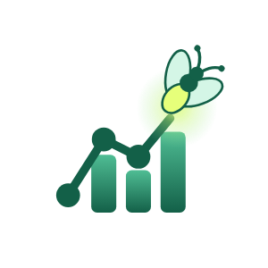

DataLumenPolítica de privacidade
Atualizada em 19 de outubro de 2026
O DataLumen é um aplicativo para Windows que ajuda analistas a documentar, revisar e melhorar projetos Power BI. Esta página explica, de forma simples, o que acontece com os seus dados.
Resumo
- O DataLumen funciona no seu computador. Ele não coleta, não envia e não vende dados pessoais nem dados dos seus relatórios.
- Não tem telemetria, rastreamento, anúncios nem conta de usuário.
Arquivos e documentos
Os projetos que você abre e os documentos que o app gera ficam só no seu computador (por exemplo, na pasta Documentos\DataLumen). Nada é enviado para servidores do DataLumen.
Licença
A licença é conferida no próprio computador, a partir de um código gerado pelo app. Para ativar, você envia esse código ao desenvolvedor e recebe a chave de volta. O código não contém dados pessoais.
Assistente de IA (opcional)
O Assistente usa o Claude Code que você instala e conecta com a sua conta da Anthropic. O que for enviado à Anthropic durante esse uso segue os termos e a política de privacidade da Anthropic. Ferramentas adicionais que você liga em Integrações (por exemplo, as da Microsoft) seguem os termos de cada fornecedor.
Internet
O app só acessa a internet quando você pede: para instalar ferramentas, abrir links ou usar o Assistente.
Crianças
O DataLumen é uma ferramenta profissional e não se destina a menores de 13 anos.
Mudanças e contato
Se esta política mudar, a data acima será atualizada. Dúvidas: use o contato de suporte informado na página do DataLumen na Microsoft Store.